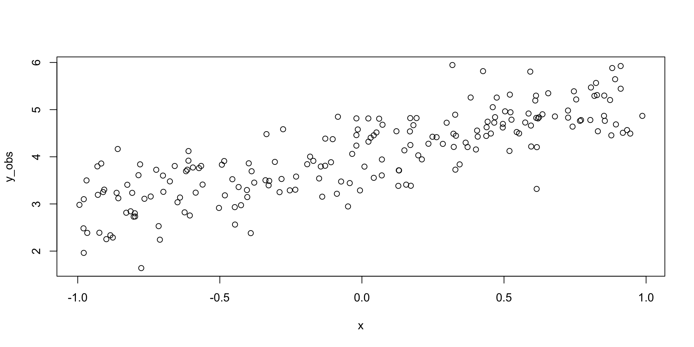
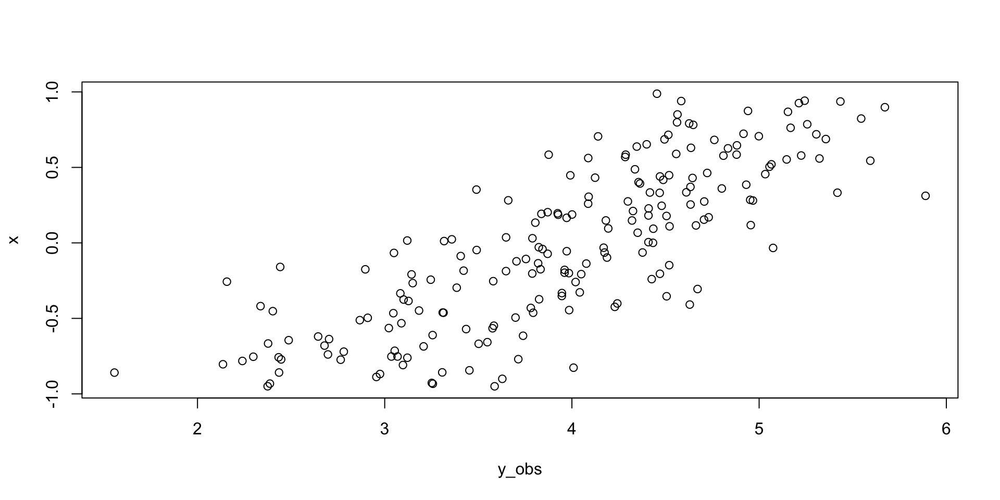
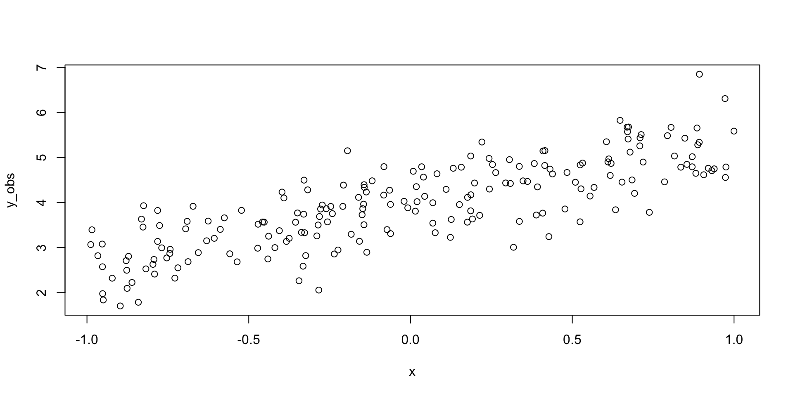

yintercept <- 4
slope <- 1.3
obs_error <- .5
x <- runif(200, min = -1, max = 1)
y_mean <- yintercept + slope * x
y_obs <- rnorm(200, mean = y_mean, sd = obs_error)Template for presentations
Un beau titre
this is the first slide
second
Test your model
img:

it is a landscape
check with simulations
check with simulations
choose parameters
yintercept <- 4
slope <- 1.3
obs_error <- .5make up an X variable
yintercept <- 4
slope <- 1.3
obs_error <- .5
x <- runif(200, min = -1, max = 1)calculate the average
yintercept <- 4
slope <- 1.3
obs_error <- .5
x <- runif(200, min = -1, max = 1)
y_mean <- yintercept + slope * xsimulate some observations
finally, visualize
plot(y_obs ~ x)
here it is all on one slide
yintercept <- 4
slope <- 1.3
obs_error <- .5
x <- runif(200, min = -1, max = 1)
y_mean <- yintercept + slope * x
y_obs <- rnorm(200, mean = y_mean, sd = obs_error)
plot(y_obs, x)
Or we can present the code and results separately
yintercept <- 4
slope <- 1.3
obs_error <- .5
x <- runif(200, min = -1, max = 1)
y_mean <- yintercept + slope * x
y_obs <- rnorm(200, mean = y_mean, sd = obs_error)plot(y_obs ~ x)
another equation
\[ 2 + 4 = 6 \]
The equation
\[ \begin{align} y &\sim \text{N}(\mu, \sigma_{obs}) \\ \mu &= a + bx \\ \end{align} \]
The model
data {
int<lower=0> N;
vector[N] y;
}
parameters {
real mu;
real<lower=0> sigma;
}
model {
y ~ normal(mu, sigma);
mu ~ normal(0, 1);
sigma ~ exponential(1);
}